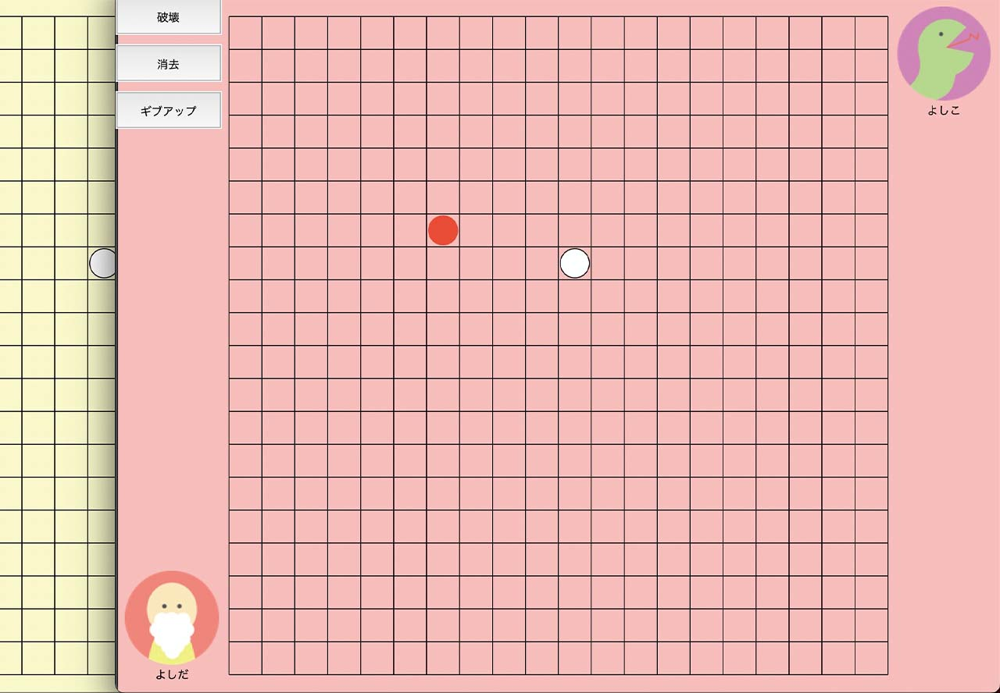
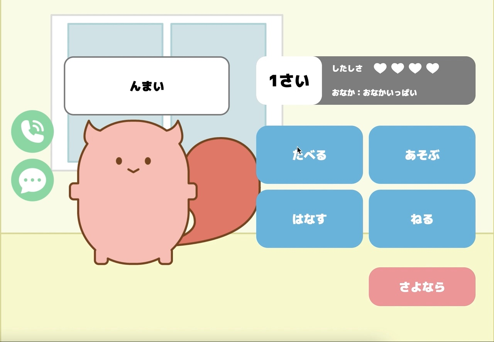

五目並べゲーム

Pythonで五目並べゲームを制作しました。ローカルサーバーを立てて2人で対戦することができます。このゲームの特徴は、普通の五目並べのルールに加えて、画面左上に存在する白いボタンから「碁盤を破壊する」「置いた石を消す」「ギブアップする」といった特殊な操作を行うことができるという点です。キャラクターはAdobe Illustratorで作成しています。
育成ゲーム

nodeを使って育成ゲームを制作しました。ローカルサーバーを立てて、上限無しに何人とでも通信することができます。このゲームの特徴は、育成するキャラクターが「かめ」「ハムスター」「りす」の3種類から選べて、それぞれ育成する難易度やコマンドを選択した際の反応が全く違うということです。五目並べゲームと同様に、キャラクターはAdobe Illustratorで作成しています。